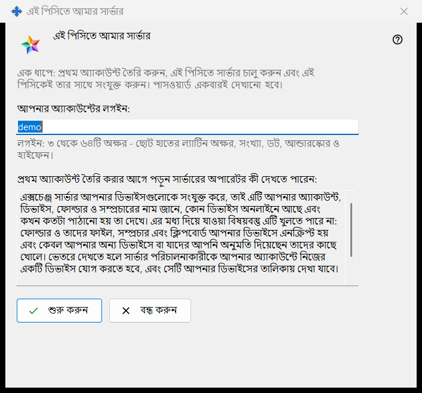
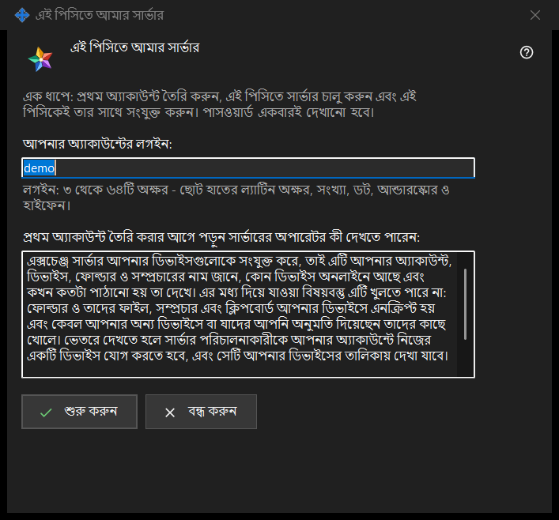

এই পিসিতে আমার সার্ভার
এটি কীসের জন্য
এক ধাপে এই পিসিতে একটি ব্যক্তিগত Media Exchange Server সেট করে: এটি প্রথম অ্যাকাউন্ট তৈরি করে, সার্ভার চালু করে এবং এই পিসিটিকেই তার সঙ্গে যুক্ত করে। জানালাটি Share Manager সেটিংসের Media Exchange Server পৃষ্ঠার এই পিসিকে আমার সার্ভার হিসেবে ব্যবহার করুন.. বোতাম থেকে খোলে; এই পিসিতে কোনো সার্ভার সেট করা না থাকলেই কেবল বোতামটি দেখা যায়।


এই ক্রমে
- আপনার Windows ব্যবহারকারীর নাম থেকে নেওয়া প্রস্তাবিত লগইনটি দেখে নিন, অথবা নিজের লগইন লিখুন।
- অপারেটর কী দেখতে পারেন তার বিবৃতি পড়ুন।
- শুরু করুন চাপুন এবং চারটি ধাপ শেষ হওয়া পর্যন্ত অপেক্ষা করুন।
- পাসওয়ার্ড সঙ্গে সঙ্গে কপি করুন, তারপর আপনার অন্য ডিভাইসের জন্য ফিঙ্গারপ্রিন্ট বা সংযোগ স্ট্রিং কপি করুন।
- বন্ধ করুন চাপুন।
উপাদানসমূহ
লগইন
আপনার অ্যাকাউন্টের লগইন ঘরে 3 থেকে 64টি অক্ষর লেখা যায়: ছোট হাতের লাতিন অক্ষর, অঙ্ক, বিন্দু, আন্ডারস্কোর ও হাইফেন; বড় হাতের অক্ষর আপনাআপনি ছোট হাতের হয়ে যায়। লেখাটি লগইন হতে না পারলে ঘরের নিচের ইঙ্গিত সতর্কতার রঙে দেখায়, এবং তা না হওয়া পর্যন্ত শুরু করুন কিছুই করে না।
অপারেটর কী দেখতে পারেন
শুধু-পঠনযোগ্য বাক্সটি (এর ওপরের লাইন: প্রথম অ্যাকাউন্ট তৈরি করার আগে পড়ুন সার্ভারের অপারেটর কী দেখতে পারেন) জানায় সার্ভারের অপারেটর অ্যাকাউন্ট, ডিভাইস, ফোল্ডার, সম্প্রচার ও ক্লিপবোর্ড সম্পর্কে কী দেখতে পারেন, সার্ভার কী পড়তে পারে না, এবং লগ কত দিন রাখা হয়। নিজের সার্ভারে অপারেটর আপনিই।
ধাপ ও ব্যর্থতা
শুরু করুন চারটি ধাপ চালায় এবং বর্তমান ধাপের নাম দেখায়: অ্যাকাউন্ট তৈরি হচ্ছে.., সার্ভার চালু হচ্ছে.., সার্টিফিকেট যাচাই হচ্ছে.. এবং এই পিসি সংযুক্ত হচ্ছে..। এ সময় লগইন ঘর তালাবন্ধ থাকে এবং জানালাটি বন্ধ করা যায় না। কোনো অ্যাকাউন্ট তৈরি না হলে একটি বাক্য কারণ জানায়, যেমন: এই অ্যাকাউন্ট আগে থেকেই আছে - অন্য লগইন বেছে নিন। লগইন ঠিক করে আবার শুরু করুন চাপুন।
ফলাফল ও ঠিকানা
সফল হলে জানালাটি এই বার্তা দেখায়: হয়ে গেছে: সার্ভার চলছে, অ্যাকাউন্ট তৈরি হয়েছে এবং এই পিসি তার সাথে সংযুক্ত। সঙ্গে এই সারিগুলো তালিকাভুক্ত হয়: এই পিসির জন্য ঠিকানা, অন্য ডিভাইসের জন্য ঠিকানা (ওই ঠিকানা ঠিক না হওয়া পর্যন্ত সেখানে লেখা থাকে সেট করা নেই - এক্সচেঞ্জ সার্ভারের সেটিংসে এটি দিন), লগইন, পাসওয়ার্ড (একবারই দেখানো হয়েছে) এবং সার্টিফিকেটের ফিঙ্গারপ্রিন্ট। অন্য ডিভাইসের জন্য ঠিকানা ঠিক হলে সংযোগ স্ট্রিংও যোগ হয়। সার্ভার চালু না হলেও অ্যাকাউন্টটি থেকে যায় এবং তার পাসওয়ার্ড নিচে একবার দেখানো হয়।
পাসওয়ার্ড ও কপি করা
পাসওয়ার্ড ঢাকা থাকে। পাসওয়ার্ড দেখান সেটি প্রকাশ করে; পাসওয়ার্ড কপি করুন সেটি সুরক্ষিত পথে ক্লিপবোর্ডে রাখে, যাতে তা Windows ক্লিপবোর্ড ইতিহাস ও ক্লাউড ক্লিপবোর্ডের বাইরে থাকে। এই পিসিতে অ্যাকাউন্টের পাসওয়ার্ড রাখুন চালু না থাকলে জানালা সেটি কেবল এই একবারই দেখায়। ফিঙ্গারপ্রিন্ট কপি করুন ও স্ট্রিং কপি করুন সাধারণ কপি: এদের কোনোটিতেই পাসওয়ার্ড থাকে না। অন্য ডিভাইসের ঠিকানা, লগইন, পাসওয়ার্ড ও ফিঙ্গারপ্রিন্ট লাগে; প্রথম সংযোগের সময় তারা ফিঙ্গারপ্রিন্ট মিলিয়ে দেখে।
বন্ধ করা
পাসওয়ার্ড কপি করা না হলে, দেখানো না হলে এবং এই পিসিতে রাখা না হলে বন্ধ করুন জিজ্ঞাসা করে: পাসওয়ার্ড কপি না করেই বন্ধ করবেন? ডিফল্ট উত্তর না, কারণ পাসওয়ার্ড আর দেখানো যায় না, শুধু রিসেট করা যায়।
ম্যানেজার সেটিংস · SFTP শেয়ারিং সেটিংস · এক্সচেঞ্জ সার্ভার সেটিংস